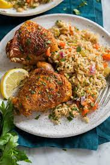

Chicken and Rice Simple Recipe

5-Minute Chicken & Rice Dinner gives you chicken, rice and veggies, all in one skillet, all in 15 minutes, start to finish. It also uses ingredients you usually have on hand, so there's no need to make a late grocery run!
Ingredients
- 1 1/4 pounds boneless, skinless chicken breast
- 1 tablespoon vegatable oil
- 1 can Campbell's Condensed Cream of Chicken Soup
- 1 1/2 cups water
- 1/4 teaspoon paprika
- 2 cups uncooked instant white rice
- 2 cups fresh or frozen broccoli florets
Steps
- Season chicken with salt and pepper
- Heat the oil in a 12-inch skillet over med-high heat
- Add the chicken and cook for 6 minutes or until browned on both sides, then remove
- Stir in the soup, water, and paprika in the skillet and heat to a boil
- Stir in the rice and broccoli, reduce heat to low
- Return the chicken to the skillet
- Sprinkle the chicken with additional paprika
- Cover and cook for 5 minutes or until the chicken is done and the rice is tender
- Season to taste before serving